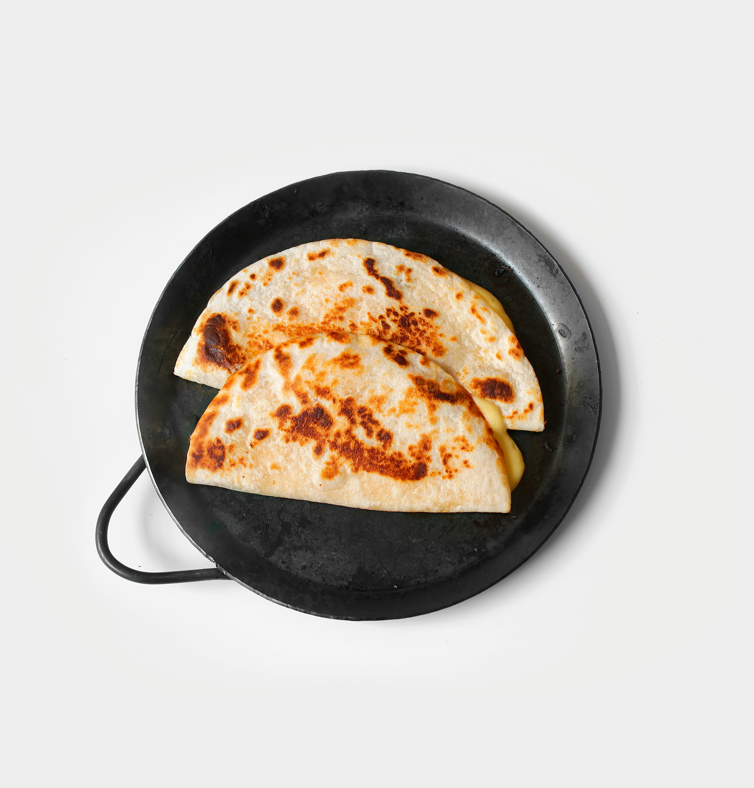

Quesadillas

Quick, easy, quesadillas
Ingredients
- tortillas (corn or flour)
- shredded mexican cheese
- refried beans
- (optional)shredded chicken or steak
Steps
- put a thin spread of refried beans on one tortilla
- spread the cheese over the top of the beans
- put a top tortilla on
- put the quesadilla in the skillet on medium low
- flip the quesadilla when its lightly browned
- finish cooking; the second side takes less time
Home